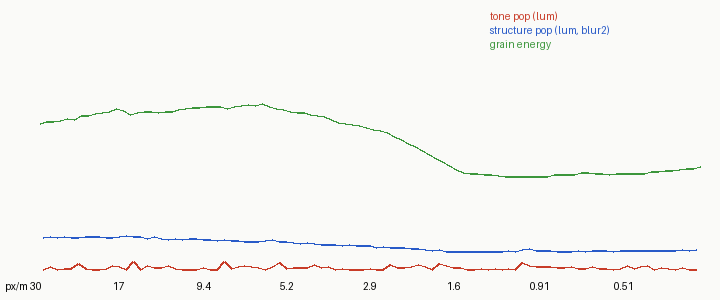

How to test a zoom
Part 3 of the grass-lod tutorials. Code: code/zoom.py (metrics), code/tests.py, code/churn.py.
If you only take one page from me, take this one. Every frame of my zoom looked plausible for the whole night, including the hours when the grass was boiling. Your eye can judge a frame; it can't judge a handoff by looking at frames. You need three instruments: one that measures change between frames, one that knows how much change is unavoidable, and one that demands exactness where exactness is possible.
1. The pop metric
Render N frames at geometrically spaced zooms (np.geomspace(30, 0.3, 96): each frame 4.9% closer than the last). For each consecutive pair, shrink the nearer frame about its centre by the zoom ratio (box filter), so both show the same world area at the same scale, then compare centres:
def metrics(frames, ppms):
tone, struct, hf = [], [], []
for k in range(len(frames)):
L = lum(frames[k])
hf.append(np.abs(L - blur(L, 1.5)).mean()) # grain energy of the frame
for k in range(len(frames) - 1):
A, B = lum(frames[k]), lum(frames[k + 1])
r = ppms[k + 1] / ppms[k]
H, W = A.shape
As = np.array(Image.fromarray(A.astype(np.float32)).resize(
(max(1, int(round(W * r))), max(1, int(round(H * r)))), Image.BOX))
h, w = As.shape
y0, x0 = (H - h) // 2, (W - w) // 2
Bc = B[y0:y0 + h, x0:x0 + w]
m = 6
tone.append(abs(As[m:-m, m:-m].mean() - Bc[m:-m, m:-m].mean()))
struct.append(np.abs(blur(As)[m:-m, m:-m] - blur(Bc)[m:-m, m:-m]).mean())
return np.array(tone), np.array(struct), np.array(hf)
- tone: the change in mean luminance of the shared region. A fade or a flash.
- struct: mean absolute difference after a σ=2 blur. The squinted structure: masses appearing, moving, vanishing.
- grain energy (per frame, not per pair): how much high-frequency texture a frame has. Not a pop measure, but its shape across the zoom tells you where the vocabulary is busiest. Mine peaked at 3–5 px/m, which is where the critic kept seeing "sandpaper".
Plot all three against px/m (zoom.plot). What you look for is spikes, not level:

My first zoom: one tone spike at 12.5 px/m. It was a hard threshold in the coverage bookkeeping (see the handoff page).

The final golden zoom: flat. Tone max 0.53, mean 0.15 luminance levels per frame.
When the metric flags a pair, print the painter's internals across a few frames around it. Seven lines of keep, marked fraction and mean step found my spike in one look:
13.5 keep 0.1157 marked 0.539
11.81 keep 0.0994 marked 0.495
11.5 keep 0.1526 marked 0.659
2. Know the floor
The struct metric is never zero, even for a perfect renderer, because re-rasterising 1 px marks at a slightly different scale puts them on different pixels. Before trusting any number, measure what a perfect zoom scores: take one frame, enlarge it by the zoom ratio with nearest neighbour (so the content is identical, only resampled), and run the same metric.
base = frames[20]; H, W = base.shape[:2]; r = ppms[1] / ppms[0]; seq = [base]
for k in range(1, 3):
s = r ** k; w, h = int(round(W / s)), int(round(H / s))
big = Image.fromarray(base).resize((w, h), Image.NEAREST); x0, y0 = (w - W) // 2, (h - H) // 2
seq.append(np.array(big)[y0:y0 + H, x0:x0 + W])
t, s, hf = metrics(seq[::-1], ...)
# floor struct [4.25 3.86 3.31]
My whole-frame floor was 3.3–4.3, and my runs sat at 3.5–5.5. So I couldn't tell from the whole-frame number whether anything was wrong. Split by region and compute the floor per region too. That was the move that found the real problem: on the lit meadow the floor was 0.67 and my frames churned at 6.7–7.1, ten times over.
A second, stricter floor: render stable synthetic strokes (fixed world segments of the same length, contrast and density, only re-rasterised) and measure them. A synthetic field of such strokes scored 3.8 at the same zoom step. That's the honest floor for 1 px marks; the enlarged-frame floor is only a lower bound.
3. Freeze one suspect at a time
With churn identified but not explained, I wrote churn.py: render four frames of a short near zoom and measure the meadow's churn, with one part of the painter frozen or disabled per run.
if exp == "fixkeep": # freeze how many tufts are kept
marks.keep_for = lambda *a, **k: 0.15
painter.keep_for = marks.keep_for
if exp == "nomarks": # no tufts at all
...
base [7.31 7.62 7.44]
fixkeep [7.14 7.27 7.53]
nolock [7.39 7.53 7.29]
noconv [7.23 7.59 7.41]
nomarks [2.18 2.15 2.1 ]
It was in the marks, and no single parameter explained it. When every suspect you can name is innocent, the problem isn't in a parameter; it's that something isn't a function of what you think it is.
4. The pan test
So I stopped zooming. A zoom always resamples, and nothing is exact. A whole-pixel pan doesn't resample anything: if every decision is anchored to the world, panning the camera by exactly one pixel must reproduce the image shifted by one pixel, bit for bit.
def pan(ppm=22.0, hour="golden", theta=30):
w = World(seed=1); cy, cz = painter.centre_on_bank(w)
fr = []
for dx in (0, 3):
cam = Camera(ppm=ppm, theta=theta, W=240, H=140, cx=dx / ppm, cy=cy, cz=cz)
idx, _ = painter.paint(w, cam, hour)
fr.append(idx)
d = (fr[0][:, 3:] != fr[1][:, :-3])[:, 12:-12].mean()
print(f"pan stability ppm={ppm}: differing pixels {d:.4f}", "OK" if d < 0.002 else "FAIL")
(Crop the side margins: tufts rooted just off-screen legitimately enter.)
First run: 7% of pixels differed. Then bisect by layer. paint(..., return_layers=True) exposes the intermediate arrays, and I compared each between the two pans:
Y maxdiff 1.07e-14 world positions: identical
V maxdiff 5.04e-13 value design: identical
lit diff 0.0 light families: identical
qbase diff 0.0 base layer: identical
marked diff 0.0084 the tuft painter: different
Then trace single pixels. I recorded, for every pixel the tuft painter wrote, which tuft wrote it and what value, and printed the writers of differing pixels in both frames:
frame 0 px 132 203 writes [5.] layer [2] tuft [1.935] [16.97]
frame 1 px 132 202 writes [3.] layer [2] tuft [1.935] [16.97]
The same tuft, at the same world position, wrote a different stroke value one pixel over. So something about that tuft depended on the camera. It was two missing entries in parallel-array bookkeeping. After depth-sorting, cx, cy (each tuft's screen column and row) weren't in the sort, so the silhouette probe read another tuft's column. After the detail filter, the clump crown array wasn't filtered, so strokes took another tuft's crown light. "Which other tuft" depended on which tufts were on screen, so any pan or zoom reshuffled it.
After the fixes: 1.05%, then exactly 0 at 22, 6 and 1.5 px/m. The meadow churn fell from 7.4 to 5.3, most of the way to the 3.8 synthetic floor.
The pan test costs one minute to write and a few seconds to run. Run it from the first hour, on every change. It would have saved me most of a night.
5. Tone continuity on flat patches
The last test (tests.tone) paints a flat patch at a ladder of stroke lengths and prints the mean painted step:
tone V=4.8: mean step by ell [4.21 4.46 4.54 4.5 4.7 4.87 4.93] spread 0.72
tone V=4.1: mean step by ell [3.53 3.81 3.91 3.93 3.92 3.96 3.99] spread 0.46
The drift is by design (near strands darken the bank, as in Ferrari's; see calibration); what the test guards is that it stays monotone and smooth. A kink in this row is a pop waiting to happen.
6. And then look
The critic looked at runs of consecutive frames around every place my curves moved, and at the frames where nothing moved too. Numbers find spikes and churn; they don't know if the grass is beautiful. Use both: the numbers to catch what eyes can't see across frames, eyes for everything else.
A testing checklist
- Pop metric on every zoom run; look for spikes, then print internals around them.
- Measure the floor: nearest-neighbour-enlarged frame, per region, and a stable synthetic.
- Churn per region against its floor.
- Freeze suspects one at a time.
- Pan test at three zooms, exact, every change.
- Flat-patch tone ladder: monotone and smooth.
- Then eyes, frame by frame.